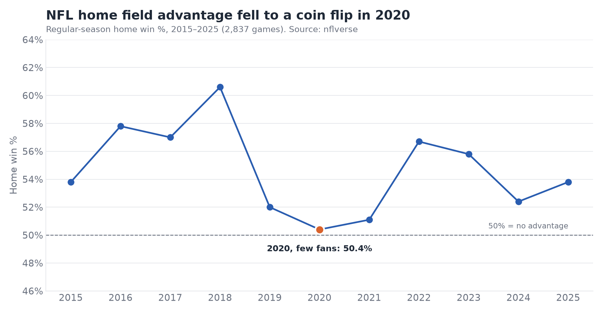

Case study · NFL
Complete
Is home-field advantage real, and did it vanish when the stands were empty?
In 2020 most NFL games were played with no fans. That gives a natural experiment: if the crowd is what helps the home team, home wins should have dropped that season.
55.0%
home win rate in normal seasons
50.4%
in 2020, with mostly empty stadiums
+26.1
Miami's home boost, the NFL's biggest
Home win % by season
Home field advantage fell to a coin flip in 2020

2,837 regular-season games · data: nflverseDownload chart (PNG)

The question
How much does playing at home help NFL teams, which teams get the biggest boost, and did that edge shrink in 2020?
Approach
- Pulled every game from the nflverse schedule data with Python.
- Cleaned it: regular season only, dropped neutral sites and ties, merged relocated teams (OAK→LV, SD→LAC, STL→LA).
- Loaded it into PostgreSQL and answered each question with its own query.
- Charted the results so the finding is in the title, not just the topic.
Tools
PythonpandasSQLPostgreSQLnflreadpymatplotlibJupyter
Findings
- Home teams won 54.6% of 2,837 regular-season games, by 1.8 points on average.
- In 2020 that fell to 50.4%, a coin flip and the lowest of any season, vs. 55.0% in normal years.
- It was already low in 2019 (52.0%), so crowds look like part of the story, not all of it.
- Miami wins 62.5% at home but 36.4% away. Seattle, famous for crowd noise, actually did slightly better on the road.
Run these queries yourself in the live SQL window ↑
View code on GitHub ↗